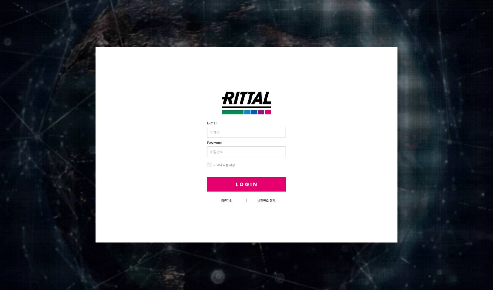
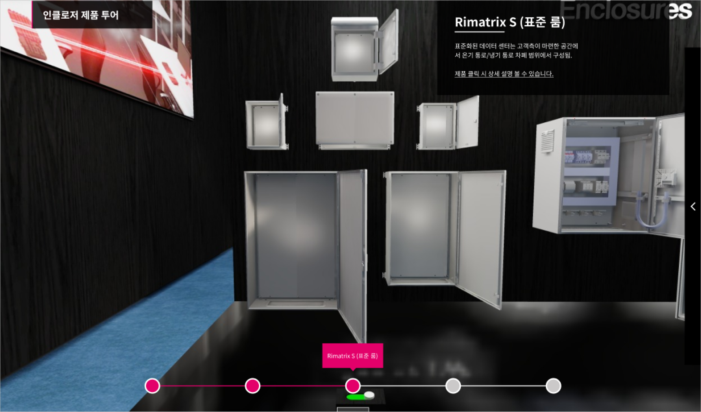
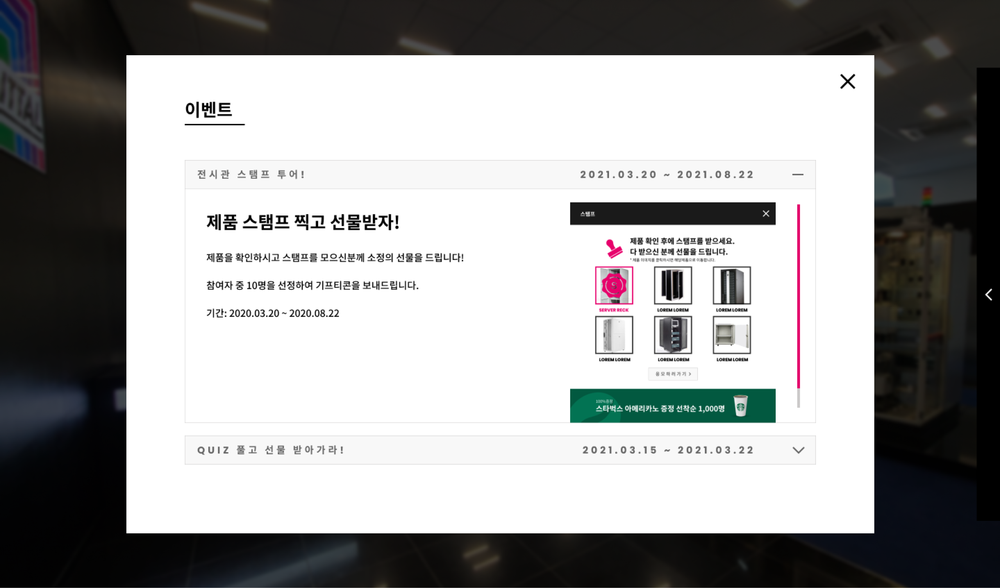
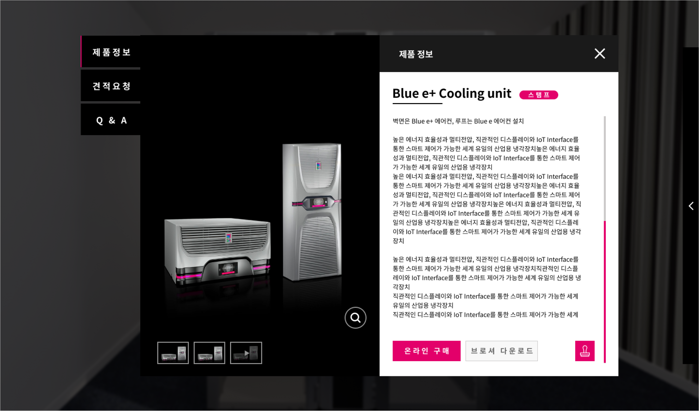
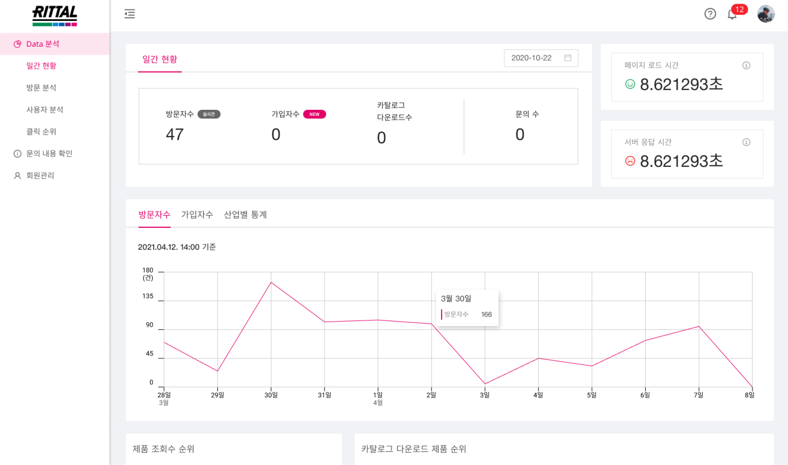

<!DOCTYPE html>
<html>
    <head>
        <meta charset="utf-8" />
        <meta name="viewport" content="width=device-width, initial-scale=1">
        <title>Rittal Digital Showroom</title>
        <link rel="stylesheet" type="text/css" href="../css/styles.css">
        <link rel="preconnect" href="https://fonts.googleapis.com">
        <link rel="preconnect" href="https://fonts.googleapis.com">
        <link rel="preconnect" href="https://fonts.gstatic.com" crossorigin>
        <link href="https://fonts.googleapis.com/css2?family=Courier+Prime:ital,wght@0,400;0,700;1,400;1,700&family=Montserrat:ital,wght@0,100..900;1,100..900&display=swap" rel="stylesheet">
        <link rel="icon" type="image/png" href="../dy_favicon.png">
    </head>
</html>
<body>
    <div class="mode-toggle">
        <button id="darkModeToggle">
            
        </button>
    </div>
    <header>
        <div class="language-selector">
            <a href="../sub_rittal_kr.html">KR</a>
            <div class="lang-divider"></div>
            <a href="#" class="active">EN</a>
            <div class="lang-divider"></div>
            <a href="../cn/sub_rittal_cn.html">CN</a>
        </div>
    </header>
    <div class="sub-contents">
        <a href="index_en.html">&lt; Back to Home</a>
        
        <div class="sub-contents-text">
            <div class="sub-text-title">Overview</div>
            <div class="sub-text-p">
                I designed a digital showroom that allows Rittal and its partner companies to exhibit their products in a 3D virtual space online. This web-based service offers various interactive features including image and video pop-ups, audio effects, and site integrations. It also includes admin functionality for behavior and visitor analytics within the digital showroom, all implemented with a responsive design.
                <br/><br/>
                My contribution to this project was 50%, and I was responsible for developing the 3D interface design. It involved setting colors and concepts to align with Rittal’s brand identity. Specifically, I used a high-saturation pink color to create a cohesive look and adjusted the opacity of objects in the 3D space to ensure they were not obstructed by interface elements. The approach allowed users to interact effectively with the elements of the digital showroom while ensuring that the overall design was both functional and visually consistent.
            </div>
        </div>
                
        
        
        
        
        <div class="sub-contents-text">
            <div class="sub-text-title">Link</div>
            <div class="sub-text-p">
                    <a href="https://www.rittal-exhibition.co.kr/">https://www.rittal-exhibition.co.kr/</a>
            </div>
        </div>
    <footer>
        <p>&copy; 2025 Dayeong Kim. All rights reserved.</p>
    </footer>

    <script src="../js/scripts.js"></script>
</body>